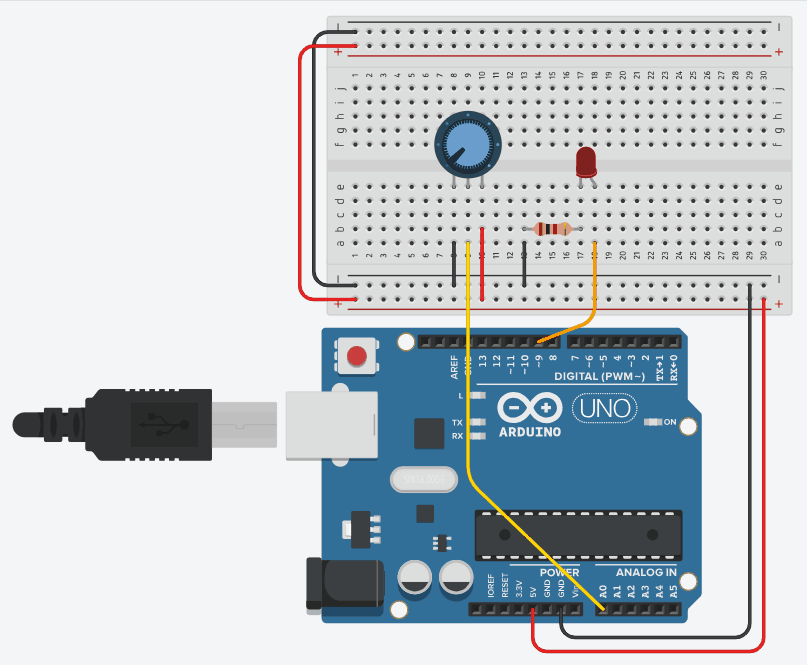

Interfacing Potentiometer and Led with Arduino

ARDUINO CODE
/* ----------------------------------------------------------- Objective: Read analog input from a 1kΩ potentiometer and control the brightness of an LED using PWM output. Components: - 1 kΩ Potentiometer - LED + 100 Ω current-limiting resistor - Arduino Uno Working: The 1kΩ potentiometer outputs an analog voltage (0–5V) to A0. Arduino reads this voltage (0–1023) and maps it to 0–255, which is used to control LED brightness on pin 9 via PWM. ----------------------------------------------------------- */ const int potPin = A0; // Potentiometer connected to analog pin A0 const int ledPin = 9; // LED connected to PWM pin 9 int potValue = 0; // To store analog input value int ledValue = 0; // To store PWM output value void setup() { pinMode(ledPin, OUTPUT); // LED pin set as output Serial.begin(9600); // Start serial communication } void loop() { potValue = analogRead(potPin); // Read potentiometer value (0–1023) ledValue = map(potValue, 0, 1023, 0, 255); // Convert to PWM brightness (0–255) analogWrite(ledPin, ledValue); // Adjust LED brightness Serial.println(potValue); // Display raw potentiometer value delay(100); // Short delay for stable output }
Start Simulation
Click the potentiometer!